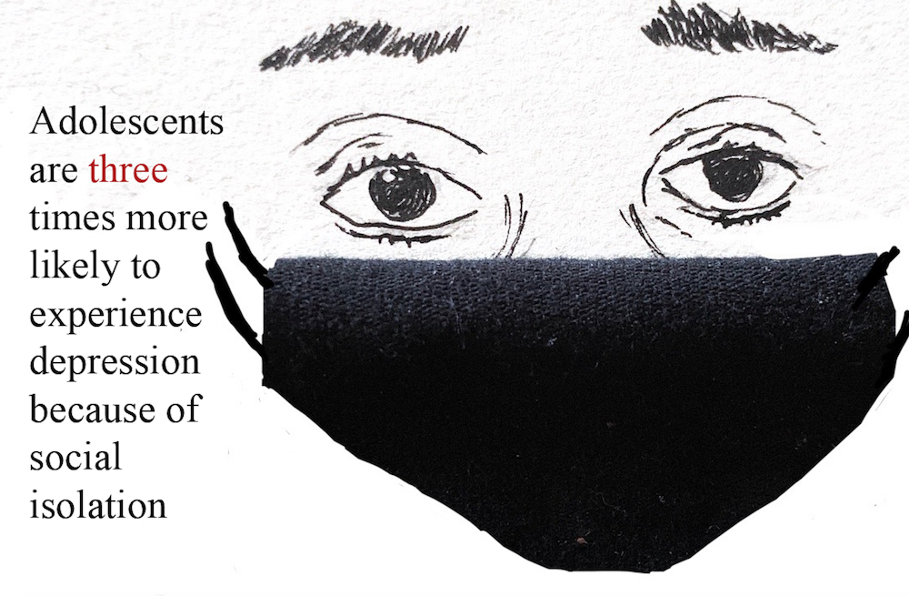

Disabilities and Mental Health
Adolescent mental health and learning disabilities are often brushed under the carpet. Through my writing, I hope to bring awareness to these undercovered topics.
Between the lines (Feature)
For our October print issue cover story, we wrote about how the pandemic has affected Jefferson students and teachers with learning disabilities and mental health issues.
With this spread, I learned about the intricacies of headline packaging with the "the" standing in between the words "between" and "lines".
For this spread we interviewed four people: a student with ADHD, a student clinically diagnosed with depression and anxiety, a teacher who has a young child at home with down syndrome, and a teacher who has been trying his hardest to connect with his students virtually.
For this data-centered spread, I incorporated my data journalism interests by finding research regarding anxiety and depression along with virtual learning. I garnered research from the Centers for Disease Control and Prevention, the United Nations Education, Scientific, and Cultural Organization, The Wall Street Journal, Mckinsey, Brookings Institution, and Market Research.
More than just a meme (Feature)
Airpods quickly revolutionized the market after its launch as both a new way to experience music and a 'flex' from those wealthy enough to afford them. A lesser-known inteded feature of airpods includes its ability to act as hearing aids. For this article, I interviewed two students at Jefferson who are hard of hearing to learn about their opinion on whether Airpods can effectively function as hearing aids.
Click here to read the story.
Unmasking mental health during the pandemic (News)
To explore data journalism, I learned how to use the powerful interactive data visualization software Tableau. This is the first article I constructed using this software. I spent one month garnering this data from the U.S. Census Bureau and SocialPro, as well as my school county’s budget documents to localize the story. For this article I conducted a twelve minute interview with our school’s social worker, Ms. Danielle Armstrong. Throughout the article I link my resources to provide evidence and maintain journalistic integrity. Finally, I drew the featured image using Faber-Castell pens, and added text using Adobe Photoshop.
Click here to read the story.
Click here view the spreadsheet of data.